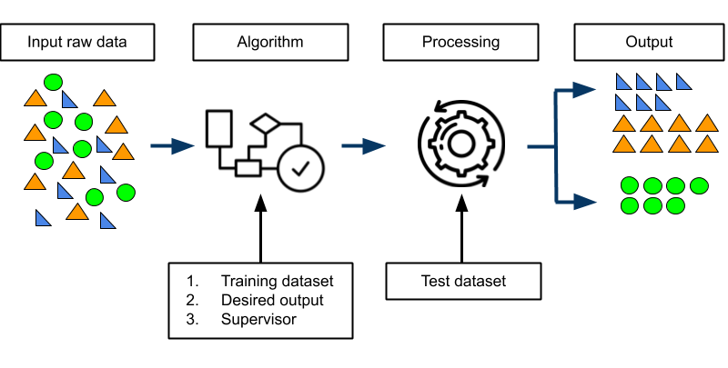
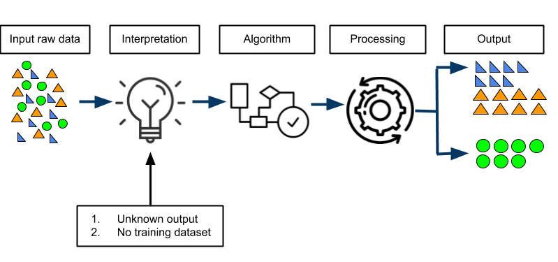
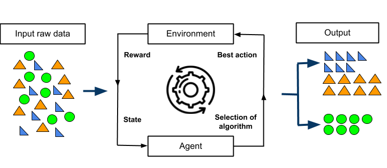
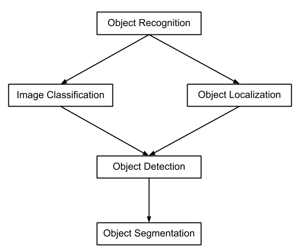
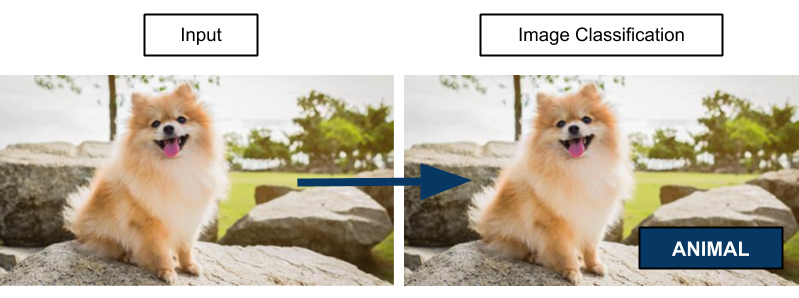
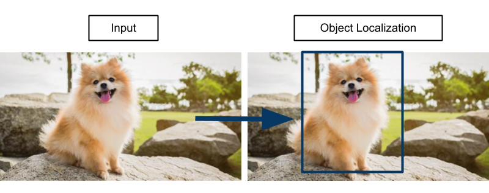
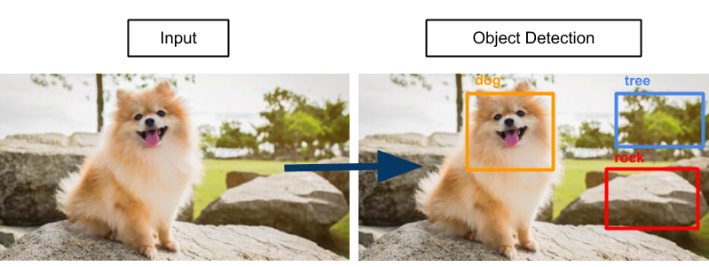
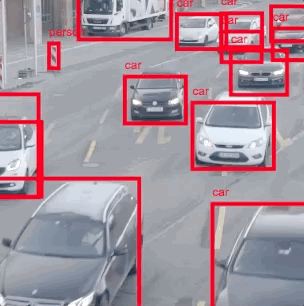
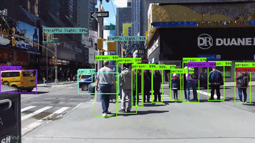

What does it do?
Machine learning is the subfield of artificial intelligence that focuses on using mathematical and statistical techniques to work out computer
algorithms, which will be used to empower machines to learn and improve by themselves. This is done with neither human intervention nor explicit
programming to do so as the machines acquire knowledge from the former data or experience. After that, they are able to come up with predictions
and conclusions on their own, yet, the performance can become better through the process known as training. The training relies on an immense
amount of data that is fed to the machines and subsequently used to explore the insightful patterns in order to improve decision-making later on.
In particular, this is similar to teaching a child to differentiate a dog and a cat. At first, the child would know neither what to do nor where
to start because he or she is not familiar with the appearance of these two animals or their characteristics. As the child grows up, he or she will
collect more information about the dog and the cat, such as their sizes, sounds, colours, etc., which could be fed by children books, TV shows or
even the actual contact that will require the child to use his or her senses. As a result, the child starts to develop the ability to distinguish
a dog and a cat based on his or her past experiences or data, without teacher or parents’ intervention.
Machine learning involves the use of several techniques:
1. Supervised Learning
2. Unsupervised Learning
3. Semi-supervised Learning
4. Reinforcement Learning
Supervised Learning
This refers to training algorithms with the use of labelled datasets, including raw data as input and the desired output, so that they know exactly
what patterns to look for between training data and test data. In other words, the goal of supervised learning is that algorithms are able to accept
new inputs and independently predict the corresponding outputs based on the given inputs. For instance, say a child is learning about geometry by
discriminating various wooden pattern blocks. In specific, if the block has three sharp-pointed corners, then it will be labelled triangle or if
the block is rounded, it will be a circle. After that, the teacher, who acts as a supervisor, repeatedly shows the blocks to the child and keeps
on correcting until the child gets all the blocks right. As a result, the child is actually learning from observation and he or she already knows
the inputs which are the appearance of each shape with the respective labels. Then, the child will apply what he or she has learned to make
predictions for the testing data. In this case, the teacher can give the child a collection of random blocks of different sizes and colours,
and ask the child to classify them into two categories: triangle and circle. Eventually, if the child is able to tell the shape of those random
blocks, then the training is successful. The following diagram will illustrate the overview of supervised learning.

Supervised learning can be also separated into two types: classification and regression. Firstly, classification refers to a process of predicting
discrete values, which means there are limited predictions that can be made and the outputs are represented in classes or categories. For instance,
the human age can be categorized into five groups and it is also known as multi-classification because the input can be assorted into more than two
classes. Otherwise, it will be a binary classification as the algorithm can only label inputs into two distinct categories.
Secondly, regression refers to a process of predicting continuous values, which means that there is an infinite number of predictions that can be
made and the outputs are real numbers. For example, an individual can guess the age of a student as many times as possible until he or she gets it
right so there are unlimited attempts to make guesses and the age is expressed as a numeric value. Overall, the more datasets feeding to the algorithm,
the more accurate the performance. However, classifying an immense amount of data can be challenging because it requires a lot of computation time to
deal with storage issues.
Unsupervised Learning
Contrary to supervised learning, this technique enables the machine to work on its own without any guidance like desired outputs or correction
from supervisors. Therefore, the machine must discover how to deal with unlabelled datasets by itself, in which it needs to find out all the unknown
patterns in data that are not visible to human eyes or features that can be useful for classification. As a result, it allows people like us to perform
more advanced tasks with less manual intervention, yet it can lead to unpredicted output. For example, say you find a picture of people who you have
never met before. In this case, you have no prior information about these people or any experiences interacting with them. Yet, you are still able to
distinguish them on the basis of gender, dressing, age, etc. and make guesses about the relationship between some people based on similar characteristics
like facial features. Technically, you might end up with the wrong conclusion of their relationships because you have little to no data. Yet, you have
the ability to learn from your mistakes and eventually make better assumptions next time. Similar to a machine, there will be errors during the performance,
but it can learn from prior experiences to self-improve. The following diagram will illustrate the overview of unsupervised learning.

Unsupervised learning can be also separated into two types: clustering and association. While clustering refers to finding a pattern in unlabelled datasets,
association refers to finding the relationships between two data objects inside large databases. Overall, in comparison with supervised learning, this
technique has the ability to interpret and resolve problems to a limitless amount of data in real-time, however, its performance is not particularly
precise because of its unpredictable outputs.
Semi-supervised Learning
This technique is the middle-ground between supervised and unsupervised learning, in which it leverages these two techniques in order to enhance the prediction
performance. In particular, we feed the machine a minority of labelled data and a majority of unlabelled datasets whenever there is a shortage of high-quality
data to carry out an accurate performance. In addition, it is impractical for us to label all the existing datasets as data keeps on increasing day by day. As
a result of semi-supervised learning, there have been several real-world applications such as speech analysis and text-document classifier.
Reinforcement Learning
This technique enables the machine to learn from its progress and leaves it to decide what is the ideal behaviour within a circumstance and optimize the prediction
performance. For the machine to meet human's expectation, either the model will get rewarded if it performs correctly, or it will receive penalties every time it
makes mistakes. As a result, the machine strives to maximize its performance to achieve the total reward. However, the machine will not receive any labelled datasets
to hint at solutions to problems so it is responsible for figuring out how to work on its own through random trials and errors during the progress. Eventually, the
machine will learn from its experience during the progress and end up self-improving. For example, take the case of a dog learning a new trick. The dog will not
understand any human languages so the best way to use is approaching different methods and see how the dog makes responses each time. If the dog's reaction meets
our expectations, it will get a treat. In return, it might receive a penalty like not offering its favourite treat until it does properly. Eventually, the dog will
understand what to do after making errors that lead to negative experiences or getting rewards as a result of positive experiences. The following diagram will
illustrate the overview of reinforcement learning.

This technique is the middle-ground between supervised and unsupervised learning, in which it leverages these two techniques in order to enhance the prediction performance.
In particular, we feed the machine a minority of labelled data and a majority of unlabelled datasets whenever there is a shortage of high-quality data to carry out an accurate
performance. In addition, it is impractical for us to label all the existing datasets as data keeps on increasing day by day. As a result of semi-supervised learning, there
have been several real-world applications such as speech analysis and text-document classifier.
Essentially to know that reinforcement learning is state of the art machine learning because, up to now, it is the best way to mimic human creativity in a model. It is also an
ideal solution to complicated behavioural problems, which makes it instantly popular owing to its ability to deal with tasks that are beyond human intelligence. As a result of
reinforcement learning, there have been several real-life applications such as autonomous cars, news recommendation, gaming like AlphaGo Zero, etc. In particular, Amazon Alexa
has been widely used in households because it is able to come up with music recommendations that fit to the user's taste. In order to do so, Amazon Alexa has gathered as much
information about the users, such as what singers they recently search for or the popular song charts within the country where they are from. These data will be subsequently
fed to the machine-learning algorithms to make predictions on what songs users would like to listen to.
What is the likely impact?
Nowadays, machine learning’s popularization has somewhat affected society as it brings more benefits and profits every single day. One potential aspect of machine learning is
that it can reduce the energy consumption from data centers, which can be a solution to global warming. In specific, Google has leveraged reinforcement learning to design
a cooling infrastructure for their data centers located around the world. This is because data keeps on increasing everyday and there is no sign that it is going to stop at
any time, especially during this pandemic when people are most likely to stay at home and surf the Internet to update information about the COVID-19. Therefore, it is crucial
for Google to have enough storage to resolve this problem, but it can also be very energy-consuming and costly for these data centers to operate as they can heat up extremely
high during the performance. As a consequence, they will release a huge amount of greenhouse gases to the environment which greatly contributes to global warming in places where
they are located. According to the recent report from Climate Change News, data centers can consume a fifth of the world's electrical power by 2025 and account for over 3% of
the total worldwide carbon emissions. In addition, the expense to maintain these stations as well as build new ones can be extremely expensive, as they will be likely to be
located in cooler climates such as Europe or under the ocean. Hence, cost-cutting has become the main concern besides the negative effects on the environment. As a result,
Google has collaborated with DeepMind to develop AlphaGo which is used to make recommendations to the system on energy efficiency. In specific, it identifies potential actions
that can reduce energy usage which are within the safety restriction and returns the results to the control system in order to be verified before carrying out the action.
There is an estimation of more than 500,000 data centers worldwide beside those are from Google, so this development will remarkably contribute to the reduction of carbon emissions
if every data center incorporated AlphaGo into its operation. At the same time, I could see no risks of losing any jobs but offers more employment for those who are specialized in
engineering and related positions as it requires a skillful source of labour to maintain the performance of the machine. In addition, there have not been any other innovations that
can alter this development so up to this point, AlphaGo has become the most sophisticated machine in dealing with energy efficiency.
How will this affect you?
As I am a gen Z who is pursuing an IT career, it is not too difficult for me to adapt to new technologies as well as keep up with the latest development. At the end of the day,
I have integrated many machine-learning applications into my daily life, such as Google Maps, Siri, grammar checking machines, and so on. Thanks to IT courses at RMIT, I earn a
better understanding of these concepts as well as become more open-minded whenever there are innovations. For example, riding apps like Grab and Gojek are commonly used nowadays.
Interestingly to know that these applications also incorporate machine learning, which assists to adjust the price of the ride, reduce the waiting time, find the shortest way to
the destination, precisely locate pick-up points, etc. Therefore, I believe it is very difficult to maintain the efficient performance of these apps if there is a lack of machine
learning usage. Back when riding apps did not exist, the mere option was either taking taxis or motorbike taxis if you did not own any vehicles, and one thing they had in common was
that the distance of the ride depending on the drivers’ navigation. Therefore, it might take longer to arrive at the desired destination if the drivers cannot precisely navigate or
intentionally go further so that customers would pay more corresponding to the taxi meters. As a result, I find that by incorporating machine learning into riding apps, it takes a
shorter time for me to book a ride rather than waiting for a taxi to pass by or contact their company’s hotline services. Moreover, it informs me the amount of money I need to pay
before the booking so that I can decide whether I should book it or not because, during the high peak of traffic jams, it will cost more than the usual. However, while I do not have
any difficulties in using these applications, the older generations like my grandparents or my dad and mom might not easily adapt to these innovations. At the same time, they can be
beneficial from technologies in healthcare as they get older. In detail, 90% of medical diagnosis involves images so the use of machine learning can assist doctors in analyzing data,
detecting potential diseases, and even driving medical solutions for possible health issues. On the other hand, machine learning is fast-paced development so it is understandable that
some people are unable to prepare for instant changes that are integrated into daily lives, and thus, they could not catch up with the pace, especially those who are poor. This is
because these people are not able to access either the Internet or related technologies. As a consequence, they have little to no understanding and experience of how to use these applications.
What does it do?
Computer vision is the subfield of artificial intelligence and machine learning that focuses on training machines to analyze, interpret, and manipulate the content of an image. In detail,
it is crucial that computer vision knows how to identify the difference between the present objects and their features within a picture, and thus, coming up with a further description of
the image. As a result, it allows people like us to retrieve information that is not observable in images we are looking at. One thing to remark is that computer vision has evolved from
using the traditional method that involves machine learning, to approaching deep learning which is based on convolutional neural networks (CNN). Therefore, the state of the art of computer
vision is powered by deep learning algorithms used to support machines to quickly comprehend and recognize objects within images, which involves at least 1000 training examples per object’s
type showing to the machines. Hence, computer vision will perform better by leveraging the accuracy of object identification, especially for unsupervised objects as computers do not need to
use feature extraction in order to accurately detect those objects.
Computer vision involves the use of several techniques:
1. Object Recognition
2. Image Classification
3. Object Localization
4. Object Detection
5. Object Segmentation
Object Recognition
This refers to a collection of computer vision methods related to each other, which is used to identify objects, including tasks like classification, localization, detection and segmentation.
The following diagram illustrated an overview of object recognition.

Image Classification
This refers to the task of analyzing an image and then indicating the class of an object represented in that picture, which will be identified by a classified label assigned to that object.
Simply put, whenever you want to know what is the category of the object within a picture, you will use the image classification. Additionally, it is essential to know that this method only
applies to only one object which significantly stands out. Thus, those that are not visible in the photograph, cannot be recognized and will be ignored. For example, say that you have a photograph
of a Pomeranian dog, which is also the input. Then, the image goes under the process of image classification and returns the output which is the label “dog” because the dog is absolutely apparent.
In contrast, even if we could almost visualize what is included in the background, it is a restriction to this technique that it cannot identify the object and its characteristics which are too small
or blurry corresponding to the full image. If that is the case, it is recommended to use the object detection technique, which will be later introduced, for the purpose of better performance.

Object Localization
This refers to the task of analyzing an image and locating the presence of objects in that image. As a result, those objects which have been detected will be surrounded by a rectangular frame called
a bounding box with the purpose to immediately point out the exact position. In particular, the input is still the same picture of a Pomeranian dog. However, after it goes under the process of object
localization, it will draw a box around the detected object, which in this case is the Pomeranian dog with the orange bounding box.

In addition, it is essential to know that object localization applies to only one object within a photograph. So, what if people want to identify and locate multiple objects within an image frame?
The next technique is the answer to this question.
Object Detection
This refers to the task of analyzing an image and then identifying the class of objects’ instances together with the respective location. In other words, object detection is the combination of image
classification and object localization, which will result in the display of objects with the corresponding classified labels and bounding boxes. For instance, the following pictures of the Pomeranian
dog illustrated the process of object detection in which there are labels of "dog", "tree", and "rock" together with bounding boxes in colours of orange, blue, and red, so that we can differentiate
the objects' class and position. Furthermore, object detection has the power to recognize multiple things and their precise locations at once, which makes it more potent than other prior techniques.
Additionally, object detection has the ability to count the number of objects' instances within the image, which might be very useful to figure out the estimation of a crowd in an event or the number
of cars on a particular street.

Interestingly to know that there is an alternative technique called object tracking, which is innovated to perform pretty much like object detection, but to deal with moving objects across a sequence
of video frames. In other words, while object detection only applies to static objects in an image, this method can identify objects that are in motion and their positions from subsequent frames.
This can be executed because those frames are still images that made up a whole moving picture and the following example has clearly exemplified the process of object tracking, in which it recognizes
moving objects as cars and draws bounding boxes to identify the locations.

Object Segmentation
This refers to the task of analyzing an image and then splitting it up into pixels which are the smallest controllable elements of a picture displayed on the screen. Therefore, people like us can see
the separation of regions within an image. Since the image will be divided into smaller areas, it is easier for the machines to identify the boundaries of objects and return the more distinct locations.
This is because it will be very difficult to identify many bounding boxes cutting across each other if objects within an image stand too close to each other. For example, the first following gif shows
that there are a lot of people walking on the street and it creates a chaos of bounding boxes whenever two people walk nearly to each other. Therefore, it makes the object tracking harder to tell the
difference between things and their characteristics. In contrast, as a result of object segmentation, the second gif enables technology like autonomous vehicles to precisely interpret their environment,
such as differentiate between the walking street and the driving road, so that it will avoid the pedestrians and follow the right path. Essentially to know that object segmentation will not split up
objects within the same class into pixels, but the categories. Simply put with the second gif, cars are in the same category as “vehicle” and pedestrians are also in their own category “human”, which
are labelled with different colours to distinguish between two categories. That’s why all cars are in magenta and the people are classified into brown colour.


Overall, the more sophisticated the technique, the more time spending on training CNN so that it will return an absolute accuracy of performance. However, for now, there are a lot of restrictions that make computer vision not fully developed, yet, it still has a significant impact on our lives owing to its applications. This is a positive signal to tell that there are many innovations likely to be done in the future if there is a committed investment in training time and finance to support them.
What is the likely impact?
Up to now, it is not difficult to tell that computer vision has integrated into our lives so much that we cannot even realize to what extent it has been developed. There have been several outstanding applications by utilizing computer vision, such as facial recognition, animal monitoring, cell classification and etc. In particular, I think that the greatest innovation in this area is the collaboration between image recognition and autonomous vehicles. One such case is Tesla self-driving cars as they will have a significant impact on minimizing human errors during driving in the future, once they have been fully developed. This is because people can get easily distracted while driving because there are a lot of things going on that always need a little bit of attention. For example, drivers ensure that their hands on the steering wheel at all times, watch out for traffic lights, avoid close distances with other transportation, etc. Therefore, multitasking can cause drivers a slight distraction, which is a common human error, that could lead to fatal accidents. Therefore, those vehicles like Tesla, which have applied sophisticated techniques of computer vision, make it safer to drive since they can sense the environment around them. In specific, computer vision is able to quickly identify obstacles blocking the driving road in real-time and avoid them right after. As a result, there will be a rapid decrease in vehicle accidents. However, if there is a transition to self-driving cars, it is likely that people like us make some changes, in which some certain jobs will be either replaced or lost, yet, it can create more opportunities at the same time. In detail, there will be low demands for public transportation drivers, especially taxi drivers, because taxi companies might want to lower the operation cost by replacing their employees with self-driving cars. The other department that can be negatively affected is the police because if there are minimal traffic accidents, they will not be able to make revenue from traffic tickets. In other cases, they might have to move to other departments in order to maintain their jobs. Contrary to those negative impacts, there will be high demands in the employment of scientists and engineers as companies like Tesla need abundant labours to maintain the performance of autonomous vehicles. Personally, as I pursue an IT career, I find this beneficial for me because whatever happens, I could find an appropriate job that best fits my abilities. The other field that can potentially flourish is the automotive industry in which manufactures will rapidly develop in order to meet the increased demand for autonomous vehicles.
How will this affect you?
From my own point of view, I believe computer vision will improve national security which allows me to feel more protected whenever I hang out with my friends or family in crowded places. This is because it is not hard to find such cases related to pickpockets in public locations like Nguyen Du walking street or shopping malls like Vincom, and I will never know if I am going to be their target. Moreover, pickpockets' tricks can be too subtle that it is very difficult for a person to even notice their possession being stolen. At the same time, I do not want to always feel insecure about whether my belongings might be robbed or suspected criminals wandering around me. Therefore, applying computer vision, such as facial recognition and number plate recognition, into my daily life enables me to be free from obsessive thoughts about a larceny. In particular, I find that it is absolutely useful to incorporate facial and number plate recognition into video surveillance. For the reason that there are over 45 million registered motorbikes in Vietnam compared to the population of 92 million so it is not extremely hard to track down a vehicle. In detail, say that my wallet was stolen when I hung out with my friends at the Bui Vien walking street and somehow the thieves were able to make way through the crowd and escape with their motorbike. In that case, I am still able to identify suspected criminals by checking video surveillance which incorporated facial recognition. Then, the police could immediately track purse-snatchers down with number plate recognition applied to cameras on the road. As a result, it will relieve my level of insecurity whenever I go out. In return, public places are able to prevent criminals from entering the crowd that could harm people with more serious consequences. As I am concerned about the safety of my friends and family, I think computer vision will do excellent work in autonomous vehicles in case one of them is unconscious. In particular, Vietnamese people have the habit of drinking alcohol on special days like the Tet holiday or family gatherings, so beers or wines are the musts that nobody could refuse. Nevertheless, it is very perilous to let people who are under the influence to hold the steering wheel, which not only puts the drivers' lives in danger but also risks the others who sit in the same vehicle. Despite being under a slight influence, even a blood alcohol content level of 0.02 can result in the decrement of visual functionality and incapability to multi-task. These are human errors that endanger people's lives at any time of driving as drivers cannot focus on what they are supposed to do. In addition, the insufficiency of visual functionality will not let drivers effectively recognize obstacles blocking the way. Consequently, serious accidents might happen including fatality. By means of computer vision, people who are unconscious could go home safe and sound even if they are under the influence.